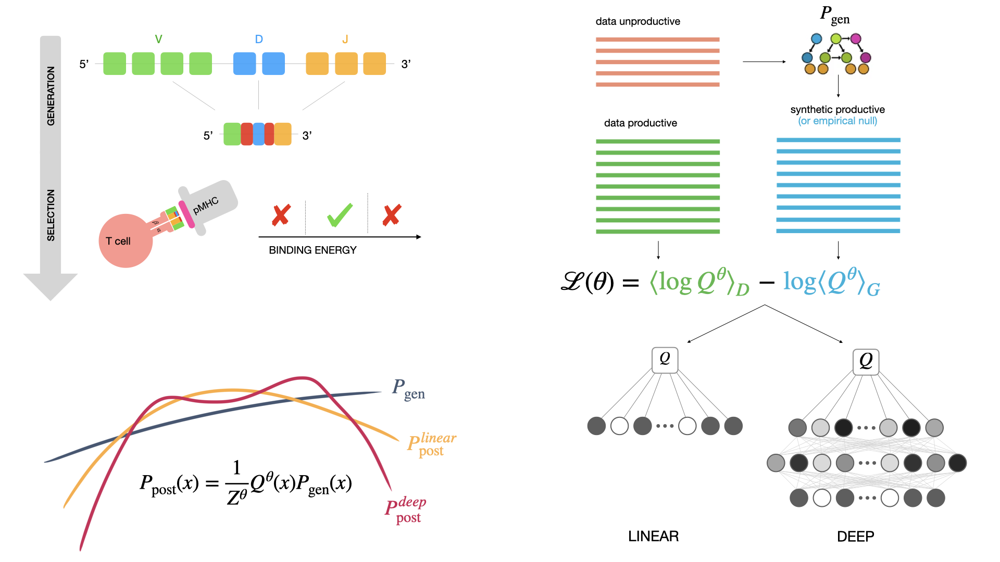

Documentation for the SoNNia package
SoNNia is a python 3 software which extends the functionality of the [SONIA](https://github.com/statbiophys/SONIA) package and is used to infer selection pressures on features of amino acid CDR3 sequences. The inference is based on maximizing the likelihood of observing a selected data sample given a representative pre-selected sample. This method was first used in Elhanati et al (2014) to study thymic selection. Generally, the pre-selected sample can be generated internally using the OLGA software, but SONIA allows it also to be supplied externally, in the same way the data sample is provided.
SoNNia expands the choice of selection models that can be inferred with respect to SONIA. Non linear single-chain models and (non-)linear paired-chain models are included, as well as a class to compare datasets using the model and the pre-processing pipeline implemented in the corresponding paper.
{kind=link}
SoNNia takes as input CDR3 amino acid sequences, with (or without) V and J genes assignemnt. Its output is selection factors that can could be used to calculate the probability to observe any sequence after selection.
Installation
SoNNia is a python 3 software. It is available on PyPI and can be downloaded and installed through pip:
pip install sonnia
SoNNia is also available on [GitHub](https://github.com/statbiophys/sonnia). The command line entry points can be installed by using the setup.py script:
pip install .
Sometimes pip fails to install the dependencies correctly. Thus, if you get any error try first to install the dependencies separately:
pip install tensorflow matplotlib olga
For mac user on new metal devices, make sure to install additional dependencies. Currently, the configuration tensorflow-macos==2.9 and tensorflow-metal==0.5.0 should work.
References
Isacchini G, Walczak AM, Mora T, Nourmohammad A, Deep generative selection models of T and B cell receptor repertoires with soNNia, (2021) PNAS, https://www.pnas.org/content/118/14/e2023141118.short
Structure
Note
Note about training data preparation
SoNNia shines when trained on top of independent rearrangement events, thus you should throw away the read count information. If you have a sample from an individual, you should keep the unique nucleotide rearrangements. This means that in principle there could be few aminoacid CDR3,V,J combination that are not unique after the mapping from nucleotide to aminoacid, but that’s fine. Moreover if you pool data from multiple people you can still keep rearrangements that are found in multiple individuals because you are sure that they correspond to independent recombination events.
Note
Note about CDR3 sequence definition
This code is quite flexible, however it does demand a very consistent definition of CDR3 sequences.
CHECK THE DEFINITION OF THE CDR3 REGION OF THE SEQUENCES YOU INPUT. This will likely be the most often problem that occurs. The default models/genomic data are set up to define the CDR3 region from the conserved cysteine C (INCLUSIVE) in the V region to the conserved F or W (INCLUSIVE) in the J. This corresponds to definition of a junction in AIRR-C format.